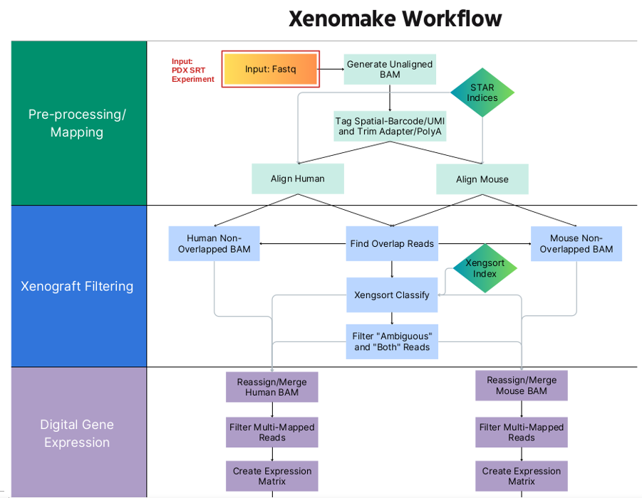

Research
Our Focus: Five Key Areas
1. Spatial Multiomic and Multimodality Integration
We have previously published important software package (Giotto), tools for analyzing spatial transcriptomic data (Giotto and HMRF), and contributed to the development of SeqFISH and SeqFISH+. Going forward, we are creating new tools to support spatial multiomic, and multimodality (i.e. image + expression) integration in both paired and unpaired settings. We hope that these tools will enable users to find novel biomarkers that can be used to both prognosticate patients and predict response to cancer therapies.
Selected Publications
Giotto, a toolbox for integrative analysis and visualization of spatial expression data
R. Dries*, Q. Zhu*, R. Dong, CH.L. Eng, H. Li, K. Liu, Y. Fu, T. Zhao, A. Sarkar, F. Bao, R.E. George, N. Pierson, L. Cai & G. Yuan
Genome Biology (2021) https://doi.org/10.1101/701680v2. * - co-first authors
Identification of spatially associated subpopulations by combining scRNAseq and sequential fluorescence in situ hybridization data
Q. Zhu, S. Shah, R. Dries, L. Cai & G. Yuan
Nature Biotechnology (2018) https://doi.org/10.1038/nbt.4260
Xenomake: a pipeline for processing and sorting xenograft reads from spatial transcriptomic experiments
B.S. Strope, K.E. Pendleton, W.Z. Bowie, G.V. Echeverria, Q. Zhu
BioRxiv (2024) https://doi.org/10.1101/2023.09.04.556109
Abstract 2335: MultiNMF: multiview factorization for joint modeling of spatial multi-omics and histology images
W. Bowie, S. Wang, B. Strope, Q. Zhu
Cancer Research (2024) https://doi.org/10.1158/1538-7445.AM2024-2335
2. Biological Basis of Triple Negative Breast Cancer Racial Disparity
There is a profound health disparity in patients with TNBC between African American and European American patients. The patients’ social economical status, lifestyle choices, race, genetics (determined by race), environmental stresses can all influence the biological progression of TNBC, and can be manifested in patients’ gene expression profiles and spatial tumor organization. We are interested in studying these differences at a cellular and multicellular level in a spatially resolved manner. Better understanding the biological basis will enable us to find therapeutic opportunities targeting underserved populations, and find biomarkers that can better predict response to immunotherapy and chemotherapy for individual racial groups.
Selected Publications
Integrative spatial omics reveals distinct tumor-promoting multicellular niches and immunosuppressive mechanisms in African American and
European American patients with TNBC
Q. Zhu*, A. Balasubramanian*, J.R. Asirvatham*, ..., S. Wang, ... , Y. Li, E. Chang, X. Li, R. Aneja, X. H.-F. Zhang, A. Sreekumar
BioRxiv (2024) https://doi.org/10.1101/2024.03.17.585428 * - co-first authors
3. Biology of Breast Cancer Metastasis and therapeutic resistance
Tumor cells from primary breast cancer can metastasize to distal organs such as liver, lung, bone, and brain. What determines the organ tropism? How are the tumor metastasis microenvironments different from those of primary tumors? We are interested in developing and applying bioinformatic tools to analyze both single cell and spatial data from primary tumor samples and their metastases in order to answer these questions. This project is in collaboration with experimental biologists.
Another area of our interest is therapy resistance particularly to chemotherapy and immunotherapy. Using PDX models of triple negative breast cancer, we use spatial data to understand the microenvironmental changes upon standard-of-care treatment, and how tumors acquire resistance over time.
Selected Publications
Abstract PO2-28-08: A spatial transcriptomic study of a triple-negative breast cancer (TNBC) patient-derived xenograft (PDX) model of residual disease refractory to conventional chemotherapy
B. Strope, K. Pendleton, W. Bowie, G. Echeverria, Q. Zhu
Cancer Research (2024) https://doi.org/10.1158/1538-7445.SABCS23-PO2-28-08
4. Spatial Pipeline, Tools, and Web Server Development
We have years of experience in pipeline (Xenomake, Giotto, CUT&RUNTools), software (HMRF, MultiNMF), and user-friendly web server development (SEEK, modSEEK, mouse cell atlas). We are interested in continuing these development to disseminate our tools and to make them widely available to the research community.
Selected Publications
Xenomake: a pipeline for processing and sorting xenograft reads from spatial transcriptomic experiments
B.S. Strope, K.E. Pendleton, W.Z. Bowie, G.V. Echeverria, Q. Zhu
BioRxiv (2024) https://doi.org/10.1101/2023.09.04.556109
Giotto, a toolbox for integrative analysis and visualization of spatial expression data
R. Dries*, Q. Zhu*, R. Dong, CH.L. Eng, H. Li, K. Liu, Y. Fu, T. Zhao, A. Sarkar, F. Bao, R.E. George, N. Pierson, L. Cai & G. Yuan
Genome Biology (2021) https://doi.org/10.1101/701680v2. * - co-first authors
CUT&RUNTools: a flexible pipeline for CUT&RUN processing and footprint analysis
Q. Zhu, N. Liu, S.H. Orkin & G. Yuan
Genome Biology (2019) https://doi.org/10.1186/s13059-019-1802-4
Revealing the Critical Regulators of Cell Identity in
the Mouse Cell Atlas
S. Suo, Q. Zhu, A. Saadatpour, L. Fei, G. Guo, G. Yuan
Cell Reports (2018) DOI: 10.1016/j.celrep.2018.10.045
Targeted exploration and analysis of large cross-platform human transcriptomic compendia
Q. Zhu, A.K. Wong, A. Krishnan, M.R. Aure, A. Tadych, R. Zhang, D.C. Corney, C.S. Greene, L.A. Bongo, V.N. Kristensen, M. Charikar, K. Li & O.G. Troyanskaya
Nature Methods (2015) https://doi.org/10.1038/nmeth.3249
5. 3D Genome Structure, Chromatin Reorganization, and Epigenetics in Development and Developmental Disease

We are keenly interested in elucidating fundamental epigenetic mechanisms and chromosomal rewiring during cellular differentiation, such as erythropoiesis, myogenesis, and embryonic stem cell differentiation. We use CUT&RUN profiling, coupled with Hi-C, ATAC-seq, and RNAseq to understand the role of chromatin regulators and nuclear matrix protein (specifically MATRIN3) during developmental transition. We perturb these factors using knockout and protein degradation.
Selected Publications
Matrin3 mediates differentiation through stabilizing chromatin loop-domain interactions and YY1 mediated enhancer-promoter interactions
T. Liu*, Q. Zhu*, Y. Kai, T. Bingham, S. Wang, H.J. Cha, S. Mehta, T.M. Schlaeger, G. Yuan & S.H. Orkin
Nature Communications (2024) https://doi.org/10.1038/s41467-024-45386-w * - co-first authors
Direct Promoter Repression by BCL11A Controls the
Fetal to Adult Hemoglobin Switch
N. Liu*, V.V. Hargreaves*, Q. Zhu*, J.V. Kurland, J. Hong, W. Kim, F. Sher, C. Macias-Trevino, ... , G. Yuan, D.E. Bauer, J. Xu, M.L. Bulyk, S.H. Orkin
Cell (2018) https://doi.org/10.1016/j.cell.2018.03.016 * - co-first authors
CUT&RUNTools: a flexible pipeline for CUT&RUN processing and footprint analysis
Q. Zhu, N. Liu, S.H. Orkin & G. Yuan
Genome Biology (2019) https://doi.org/10.1186/s13059-019-1802-4